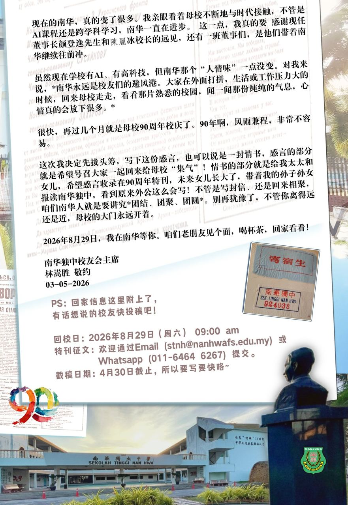
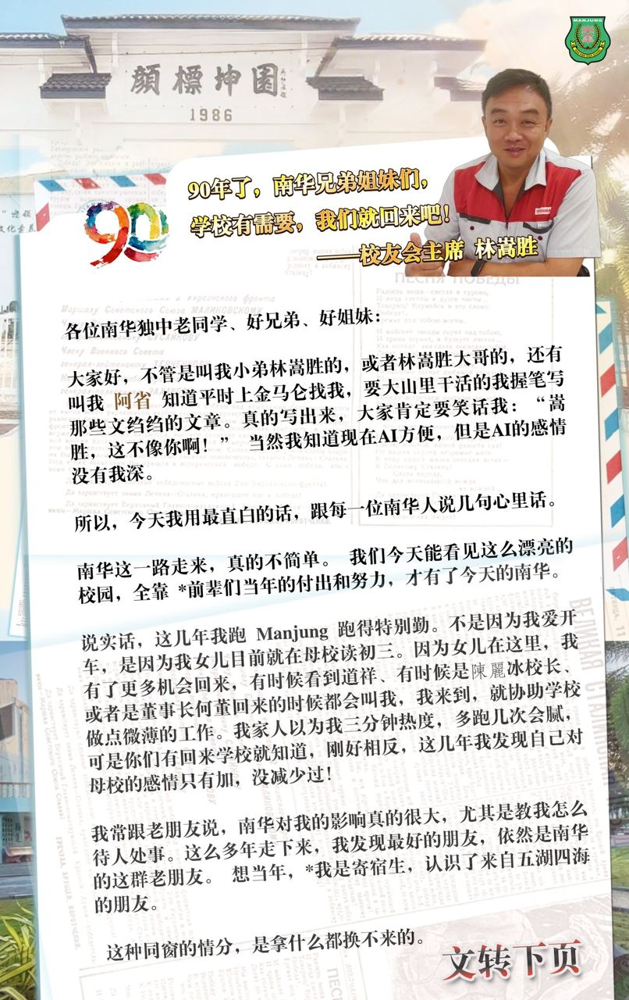

90年了，南华兄弟姐妹们，
90年了，南华兄弟姐妹们，
学校有需要，我们就回来吧！
——校友会主席 林嵩胜
各位南华独中老同学、好兄弟、好姐妹：
大家好，不管是叫我小弟林嵩胜的，或者林嵩胜大哥的，还有叫我 阿省 知道平时上金马仑找我，要大山里干活的我握笔写那些文绉绉的文章。真的写出来，大家肯定要笑话我：“嵩胜，这不像你啊！” 当然我知道现在AI方便，但是AI的感情没有我深。
所以，今天我用最直白的话，跟每一位南华人说几句心里话。
南华这一路走来，真的不简单。 我们今天能看见这么漂亮的校园，全靠 *前辈们当年的付出和努力，才有了今天的南华。
说实话，这几年我跑 Manjung 跑得特别勤。不是因为我爱开车，是因为我女儿目前就在母校读初三。因为女儿在这里，我有了更多机会回来，有时候看到道祥、有时候是陈丽冰校长、或者是董事长何董回来的时候都会叫我，我来到，就协助学校做点微薄的工作。我家人以为我三分钟热度，多跑几次会腻，可是你们有回来学校就知道，刚好相反，这几年我发现自己对母校的感情只有加，没减少过！
我常跟老朋友说，南华对我的影响真的很大，尤其是教我怎么待人处事。这么多年走下来，我发现最好的朋友，依然是南华的这群老朋友。 想当年，*我是寄宿生，认识了来自五湖四海的朋友。
这种同窗的情分，是拿什么都换不来的。
现在的南华，真的变了很多。我亲眼看着母校不断地与时代接触，不管是AI课程还是跨学科学习，南华一直在进步。 这一点，我真的要 感谢现任董事长颜登逸先生和陈丽冰校长的远见，还有一班董事们，是他们带着南华继续往前冲。
虽然现在学校有AI、有高科技，但南华那个“人情味”一点没变。对我来说，*南华永远是校友们的避风港。大家在外面打拼，生活或工作压力大的时候，回来母校走走，看看那片熟悉的校园，闻一闻那份纯纯的气息，心情真的会放下很多。*
很快，再过几个月就是母校90周年校庆了。90年啊，风雨兼程，非常不容易。
这次我决定先拔头筹，写下这份感言，也可以说是一封情书，感言的部分就是希望号召大家一起回来给母校“集气”！情书的部分就是给我太太和女儿，希望感言收录在90周年特刊，未来女儿长大了，带着我的孙子孙女报读南华独中，看到原来外公这么会写！不管是写封信、还是回来相聚，咱们南华人就是要讲究*团结、团聚、团圆*。别再犹豫了，不管你离得远还是近，母校的大门永远开着。
2026年8月29日，我在南华等你。咱们老朋友见个面，喝杯茶，回家看看！
南华独中校友会主席
林嵩胜 敬约
03-05-2026
PS：回家信息这里附上了，
有话想说的校友快投稿吧！
回校日：2026年8月29日（周六） 09:00 am
特刊征文：欢迎通过Email (stnh@nanhwafs.edu.my) 或Whatsapp (011-6464 6267) 提交。
截稿日期：4月30日截止，所以要写要快咯~

